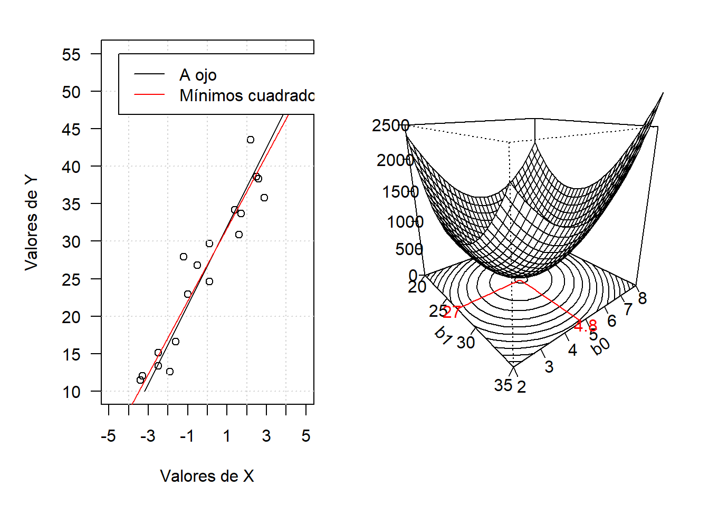

datos = read.csv2("regresionFuerzaBruta.csv")
#png("coeficientesFuerzaBruta.png", width=3000, height=1500, res = 300)
par(las = 1, mfrow = c(1, 2), mar = c(5, 5, 2, 2))
plot(datos$X, datos$Y, xlim = c(-5, 5), ylim = c(10, 55),
xaxt = "n", yaxt = "n",
xlab = "Valores de X",
ylab = "Valores de Y")
axis(1, seq(-5, 5, by = 1))
axis(2, seq(10, 55, by = 5))
grid()
lines(c(-3.2, 5), c(10, 53))
abline(lm(datos$Y~datos$X), col = "red")
legend(-4.5, 55, legend=c("A ojo", "Mínimos cuadrados"),
col=c("black", "red"), lty=1:1, cex=1)
sumQ = matrix(rep(NA, 31*31), ncol=31)
for (i in 1:31) {
b0 = 19.5 + 0.5*i
for (j in 1:31) {
b1 = 1.8 + 0.2*j
sumQ[i, j] = sum((datos$Y - (b0 + b1*datos$X))^2)
}
}
b0 = seq(20, 35, by=0.5)
b1 = seq(2, 8, by=0.2)
par(mar = c(3, 2, 2, 2))
trans = persp(b0, b1, sumQ,
phi = 20, theta = 50, expand = 1,
zlim = c(0, 2500),
zlab = "",
ylab = "b1",
xlab = "b0",
ticktype = "detailed",
axes = FALSE)Warning in persp.default(b0, b1, sumQ, phi = 20, theta = 50, expand = 1, :
surface extends beyond the boxlines <- contourLines(b0, b1, sumQ)
bottom <- -0
for (i in seq_along(lines)) {
segment <- lines[[i]]
lines(trans3d(segment$x, segment$y, bottom, trans))
}
m = which(sumQ == min(sumQ), arr.ind = TRUE)
b0min = 19.5 + 0.5*m[1]
b1min = 1.8 + 0.2*m[2]
lines(trans3d(b0min, seq(2, b1min, by=0.1), z = 0, trans), col ="red")
lines(trans3d(b0min:35, b1min, z = 0, trans), col ="red")
par(new = TRUE)
persp(b0, b1, sumQ,
phi = 20, theta = 50, expand = 1,
zlim = c(0, 2500),
zlab = "",
ylab = "b0",
xlab = "b1",
ticktype = "detailed")Warning in persp.default(b0, b1, sumQ, phi = 20, theta = 50, expand = 1, :
surface extends beyond the boxa = as.character(round(b0min,1))
text(trans3d(27, 1.8, 0,trans), a, col = "red")
b = as.character(b1min)
text(trans3d(35.5, 4.8, 0,trans), b, col = "red")
#dev.off()
#Ref: https://stackoverflow.com/q uestions/77900826/how-can-i-add-contour-lines-to-a-3d-plot-built-with-persp